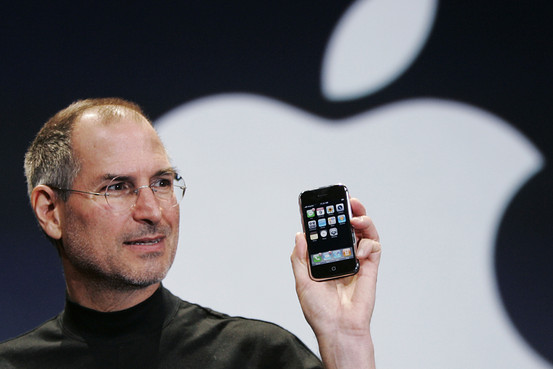

| Brand name | Description |
|---|---|
| Samsung | Samsung offers a wide selection of powerful and stylish internet-ready Smartphones, which include Android, Bada and Windows mobile |
| Apple | The iPhone from Apple is arguably the most popular and recognisable Smartphone in the world |
| Sony | Sony are known globally for their wide range of consumer electronics including TV's, Playstation 3, PSP, tablets and more |
| LG | Style meets function with an LG phone. All Smartphones come with touchscreens but none quite like those developed by LG |
|  |
iPhone comparison |
|||
|---|---|---|---|---|
| Memory | Weight | Size | Resolution | |
| iPhone 6 | 16/64/128 GB | 172 grams | 158,1 x 77,8 x 7,1 mm | 1920 x 1080 |
| iPhone 5s | 16/32 GB | 112 grams | 123,8 x 58,6 x 7,6 mm | 1136 x 640 |
Many rumors surrounding the next iPhone centered around the device's size; the majority of iPhone models have used small, 3.5-inch displays —which are smaller than the larger screens used by flagship phones from competitors. The only major change in size for the iPhone series came with the iPhone 5 (continued with the iPhone 5C and 5S), which featured a display that was taller, but the same width as prior models, measuring 4 inches diagonally. Following Apple's loss in smartphone market share to companies producing phones with larger displays (such as Samsung, whose popular Galaxy S4 model featured a 5-inch screen), reports as early as January 2014 suggested that Apple was preparing to launch new iPhone models with larger, 4.7-inch and 5.5-inch displays. Reports prior to its unveiling also speculated the possibility that Apple would use a new iPhone model to introduce a mobile payments platform using near-field communications—a technology that has been incorporated into many Android phones, but has a low adoption rate among users. The iPhone 6 and iPhone 6 Plus were officially unveiled during a press event at the Flint Center for Performing Arts in Cupertino, California on September 9, 2014. The event featured other major, previously-rumored product announcements by Apple alongside the new iPhone models, including the Apple Pay mobile payment platform, and the company's entry into the wearable computing market with the Apple Watch smartwatch. The iPhone 6 line was released on September 19, 2014; pre-orders began on September 12, 2014. In China, where the iPhone 5S and 5C were the first models in the iPhone series to be released in the country on the same day as their international launch, Apple notified local wireless carriers that it would be unable to release the iPhone 6 line in China on the 19th because there were "details which are not ready"; local media reported that the devices had not yet been approved by the Ministry of Industry and Information Technology, and earlier in the year, a news report by state broadcaster China Central Television alleged that iPhone devices were a threat to national security because iOS 7's "frequent locations" function could expose "state secrets".
Performance mark: